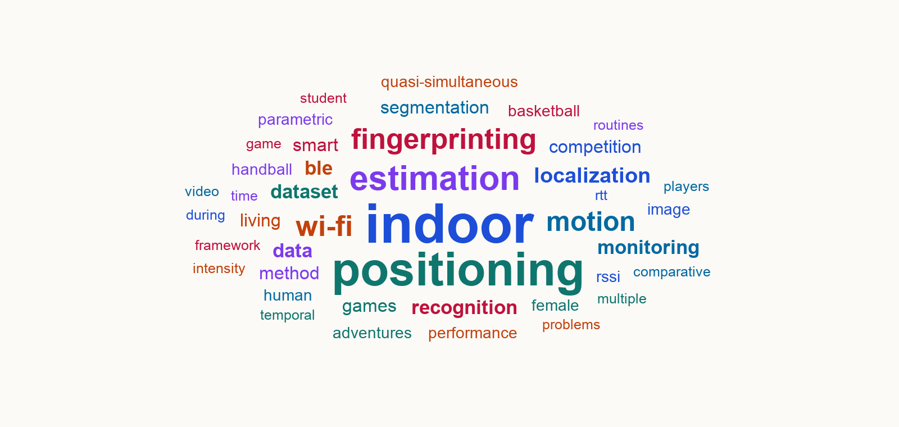

Raúl Montoliu Colás
Dr. Raúl Montoliu Colás is a Full Professor at the Department of Computer Science and Engineering and a senior researcher at the Institute of New Imaging Technologies (INIT), both at Universitat Jaume I. He coordinates the IA³ research group and the INIT. His main research interests are applied artificial intelligence, data analysis and modelling, smart devices and systems, AI for games and video games, sports analytics, and e-learning.

JournalsConferences